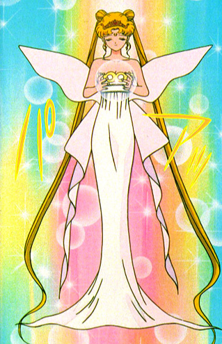

Neo-Queen Serenity
Neo-Queen Serenity became queen at 22 and married King Endymion her first love. Later that year had Chibiusa born.
Neo-Queen Serenity became queen of Crystal Tokyo.
"Endymion I love you. You were the first person I fell in love with.Even if we're reborn again and again I know that I'll meet you. And I know for certain that we'll fall in love all over again."